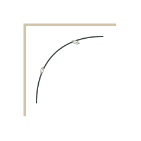

Evaluation
- Advanced aesthetic biomedicine
- Professional evaluation
- Personalised care

Advanced Aesthetic Biomedicine · Londrina, PR
The care page organises consultation, suitability, planning and responsible follow-up.


Care architecture
A compact view of the shared service language used across every concept.
Results may vary according to individual characteristics, professional evaluation, treatment indication, protocol, number of sessions and aftercare. Information on this website is educational and does not replace an individual professional evaluation.
luminous skin-quality story
A compact map of evaluation, planning, treatment and aftercare.
Skin care focuses on texture, clarity, sensitivity and barrier respect.
luminous skin-quality storyTechnology supports carefully selected protocols, not promises.
Care protects expression and avoids pressure-led aesthetic decisions.
Discuss in consultationAftercare helps protect comfort, consistency and responsible expectations.
Consultation
A short consultation route keeps decisions calm, private and evaluation-led.
CRBM 6277 · Londrina, PR